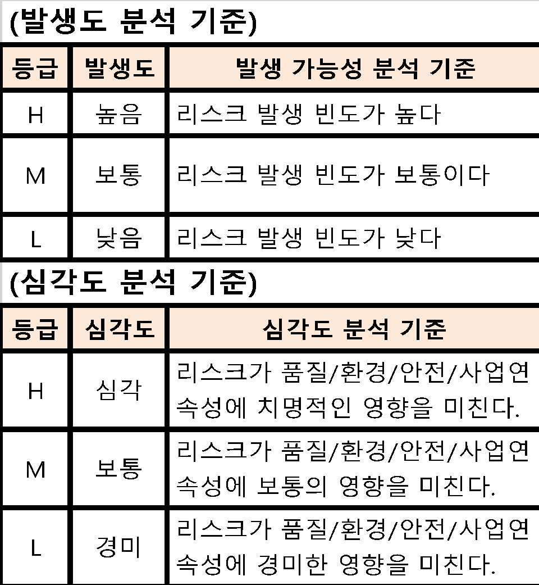
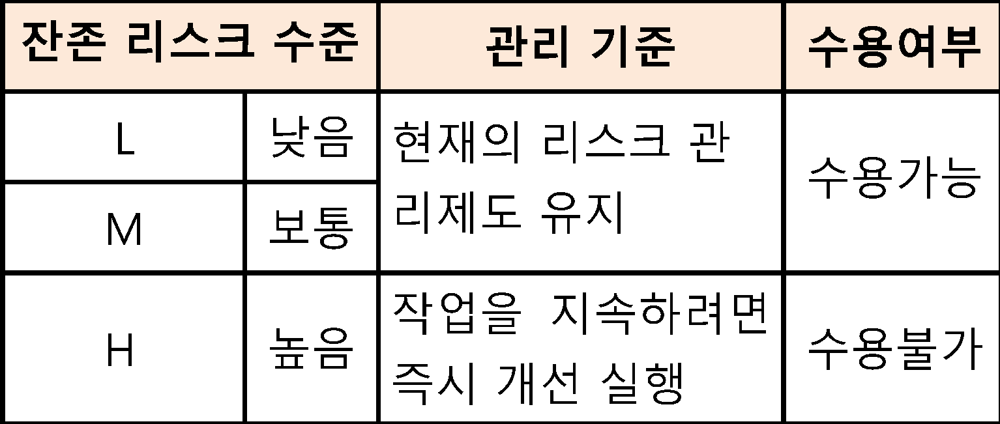
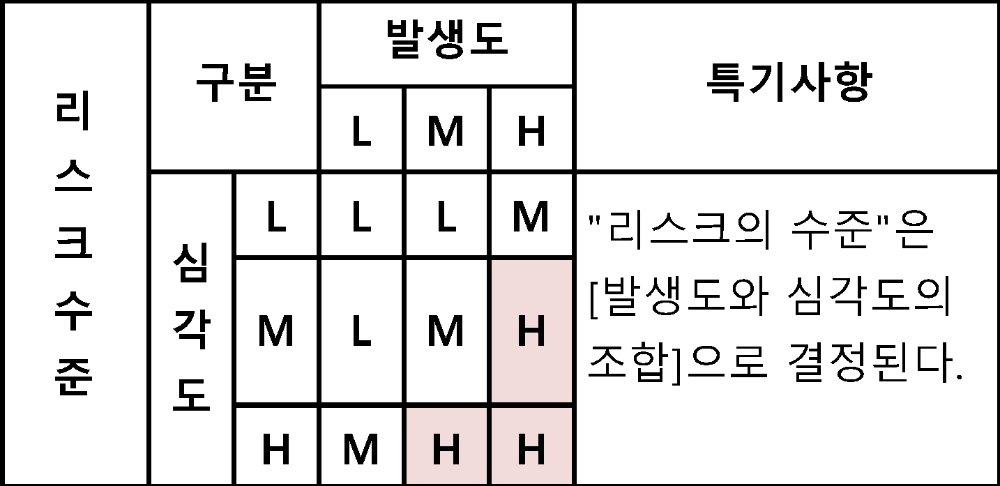
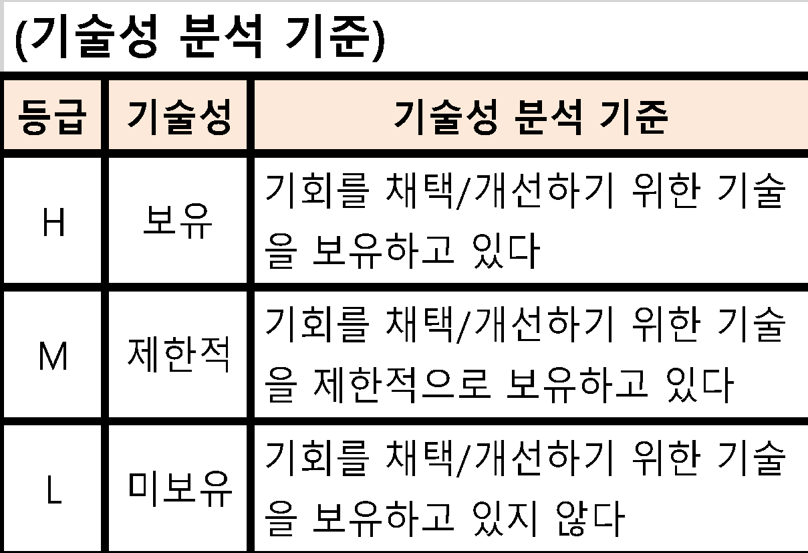
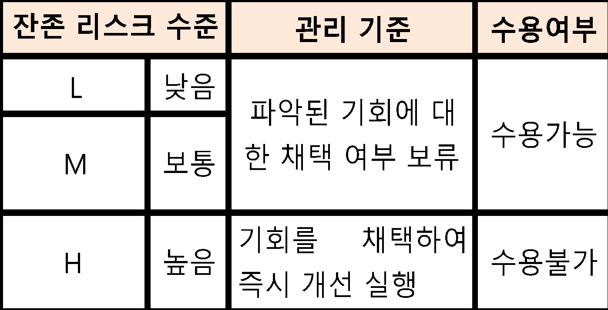
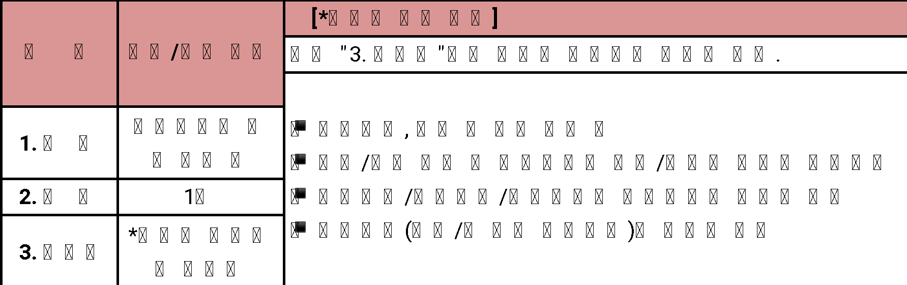
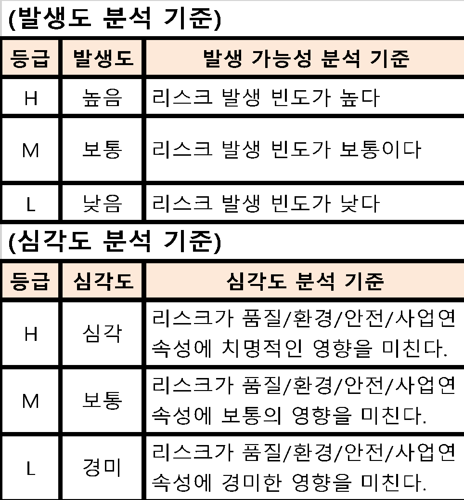
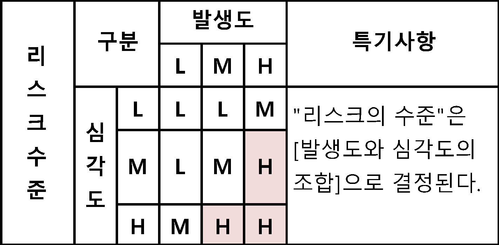
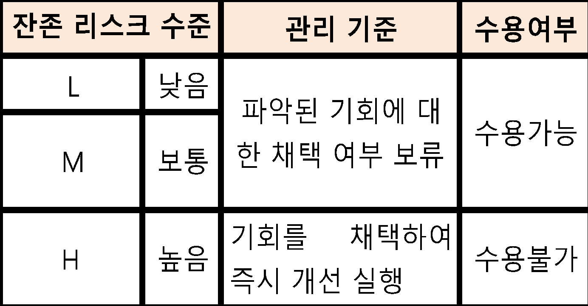
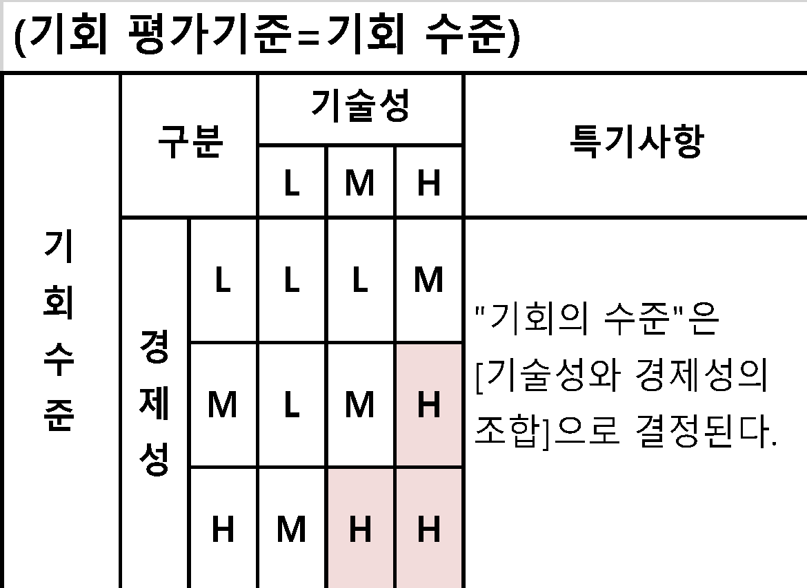

| 경영관리 프 로 세 스 | 문서번호 | ||||||||||||||||||||||||||||||||||||||||||
| 리스크 관리 지침서 | MI-0601 | ||||||||||||||||||||||||||||||||||||||||||
| 작 성 팀 | 발 행 팀 | 제 정 일 자 | 작성 | 검토 | 승인 | ||||||||||||||||||||||||||||||||||||||
| 품질팀 | 품질팀 | 2025-05-28 | 결재完 | 결재完 | 결재完 | ||||||||||||||||||||||||||||||||||||||
| NO | 개 정 일 자 | 개 정 사 유 | 개 정 쪽 | 비 고 | |||||||||||||||||||||||||||||||||||||||
| 0 | 2025-05-28 | ||||||||||||||||||||||||||||||||||||||||||
| 1 | |||||||||||||||||||||||||||||||||||||||||||
| 2 | |||||||||||||||||||||||||||||||||||||||||||
| 3 | |||||||||||||||||||||||||||||||||||||||||||
| 4 | |||||||||||||||||||||||||||||||||||||||||||
| 리스크 관리 지침 | 문서 번호 | MI-0601 | |||||||||||||||||||||||||||||||||||||||||
| 쪽 | 1 | ||||||||||||||||||||||||||||||||||||||||||
| 제정 일자 | 2025-05-28 | 개정 번호 | 1 | 개정 일자 | 2025-05-28 | 시행일자 | 2025-05-29 | ||||||||||||||||||||||||||||||||||||
| 1. 적용범위 | |||||||||||||||||||||||||||||||||||||||||||
| 본 지침은 주식회사 엠에스티(이하 "회사"라 한다)의 경영환경에 영향을 미치는 요소들에 대한 높은수준 | |||||||||||||||||||||||||||||||||||||||||||
| 리스크/기회의 평가 업무에 대해 적용한다 | |||||||||||||||||||||||||||||||||||||||||||
| 2. 목 적 | |||||||||||||||||||||||||||||||||||||||||||
| 경영환경(조직상황)과 관련된 리스크와 기회를 파악/분석/평가하고 이를 경영시스템, 프로세스 및 경영목표에 | |||||||||||||||||||||||||||||||||||||||||||
| 반영함으로써, 경영성과를 지속적으로 극대화 하는데 그 목적이 있다. | |||||||||||||||||||||||||||||||||||||||||||
| 3. 용어의 정의 | |||||||||||||||||||||||||||||||||||||||||||
| 3.1 리스크 | |||||||||||||||||||||||||||||||||||||||||||
| 리스크란 불확실성의 영향을 총칭한다. | |||||||||||||||||||||||||||||||||||||||||||
| 비고 1. 영향은 긍정적 또는 부정적 예상으로부터 벗어나는 것이다. | |||||||||||||||||||||||||||||||||||||||||||
| 비고 2. 불확실성은 사건, 사건의 결과 또는 가능성에 대한 이해 또는 지식에 관련된 정보가 부족하거나 | |||||||||||||||||||||||||||||||||||||||||||
| 부분적으로 부족한 상태이다. | |||||||||||||||||||||||||||||||||||||||||||
| 비고 3. 리스크는 흔히 잠재적인 사건과 결과, 또는 이들의 조합으로 특징지어진다. | |||||||||||||||||||||||||||||||||||||||||||
| 비고 4. 리스크는 흔히 (주변환경의 변화를 포함하는) 사건의 결과와 연관된 발생가능성 조합으로 표현된다. | |||||||||||||||||||||||||||||||||||||||||||
| 비고 5. "리스크"란 용어는 때로는 부정적인 결과의 가능성만이 있을 때 사용된다. | |||||||||||||||||||||||||||||||||||||||||||
| 3.2 리스크 이벤트 | |||||||||||||||||||||||||||||||||||||||||||
| 리스크 이벤트란 일련의 특정한 상황의 발생 또는 변화를 총칭한다. | |||||||||||||||||||||||||||||||||||||||||||
| 비고 1. 이벤트는 하나이상 발생할 수 있으며, 여러원인에서 비롯될 수 있다. | |||||||||||||||||||||||||||||||||||||||||||
| 비고 2. 이벤트는 발생하지 않은 것으로 구성될 수 있다. | |||||||||||||||||||||||||||||||||||||||||||
| 비고 3. 이벤트는 때때로 사건, 사고로 지칭될 수 있다. | |||||||||||||||||||||||||||||||||||||||||||
| 비고 4. 결과가 없는 이벤트는 일촉즉발, 사건, 아슬아슬한 상황 또는 위기일발로 지칭될 수도 있다 | |||||||||||||||||||||||||||||||||||||||||||
| 3.3 기회 | |||||||||||||||||||||||||||||||||||||||||||
| 의도한 결과를 달성하는 데 유리한 상황을 말한다. | |||||||||||||||||||||||||||||||||||||||||||
| 비고 1. 기회는 새로운 실행방안의 채택, 신제품 출시, 새로운 시장 개척, 신규 고객 창출, 파트너십 구축, | |||||||||||||||||||||||||||||||||||||||||||
| 신기술 활용, 그리고 조직 또는 고객의 니즈를 다루기 위한 그 밖의 바람직하고 실행 가능한 방안 | |||||||||||||||||||||||||||||||||||||||||||
| 으로 이어질 수 있다 | |||||||||||||||||||||||||||||||||||||||||||
| 3.4 이해관계자 | |||||||||||||||||||||||||||||||||||||||||||
| 의사결정 또는 활동에 영향을 줄 수 있거나 영향을 받을 수 있거나 또는 그들 자신이 영향을 받는다는 인식을 | |||||||||||||||||||||||||||||||||||||||||||
| 할 수 있는 사람 또는 조직 (보기 고객, 공동체, 공급자, 규제당국, 민간단체(NGO), 투자자 및 종업원) | |||||||||||||||||||||||||||||||||||||||||||
| 3.5 이슈 | |||||||||||||||||||||||||||||||||||||||||||
| 조직에게 중요한 주제로써, 조직이 설정한 경영시스템의 의도한 결과를 달성하는 조직의 능력에 영향을 | |||||||||||||||||||||||||||||||||||||||||||
| 미치는 논쟁과 토론의 문제이거나 변화하는 환경 | |||||||||||||||||||||||||||||||||||||||||||
| 비고 1. 이슈에는 긍정적, 부정적 요인 또는 고려해야 할 조건이 포함될 수 있다 | |||||||||||||||||||||||||||||||||||||||||||
| 비고 2. 국제적, 국가적, 지역적, 국지적이든 법적, 규제적, 기술적, 경쟁적,시장, 문화적, 사회적, 정치적, | |||||||||||||||||||||||||||||||||||||||||||
| (예 인원,지식,프로세스,시스템)자연적 및 경제적 외부상황 | |||||||||||||||||||||||||||||||||||||||||||
| 비고 3. 조직의 활동, 제품 및 서비스, 전략적 방향, 문화 및 역량과 같은 조직의 내부여건 | |||||||||||||||||||||||||||||||||||||||||||
| 자연적 및 경제적 외부상황 | |||||||||||||||||||||||||||||||||||||||||||
| 비고 4. 조직의 목적에 영향을 줄 수 있거나, 조직의 환경측면에 의해 영향을 받을 수 있는 기후, 대기질, 수질, | |||||||||||||||||||||||||||||||||||||||||||
| 토지 사용, 오염의 존재,천연자원의 가용성 및 생태다양성과 관련된 환경여건 | |||||||||||||||||||||||||||||||||||||||||||
| 4. 책임과 권한 | |||||||||||||||||||||||||||||||||||||||||||
| 4.1 각 팀장 | |||||||||||||||||||||||||||||||||||||||||||
| 해당 부서의 경영환경과 관련된 리스크/기회 평가결과 승인. | |||||||||||||||||||||||||||||||||||||||||||
| 리스크/기회 평가결과 수용불가 리스크 및 채택된 기회에 대한 개선조치 실시. | |||||||||||||||||||||||||||||||||||||||||||
| 해당부서원 교육 실시 | |||||||||||||||||||||||||||||||||||||||||||
| 4.2 관리팀장 | |||||||||||||||||||||||||||||||||||||||||||
| 리스크/기회 평가업무 주관 | |||||||||||||||||||||||||||||||||||||||||||
| 리스크/기회 평가 관련 교육훈련 주관 | |||||||||||||||||||||||||||||||||||||||||||
| 4.3 대표이사 | |||||||||||||||||||||||||||||||||||||||||||
| 수용불가 리스크/기회의 개선조치 승인 | |||||||||||||||||||||||||||||||||||||||||||
| 5. 업무절차 | |||||||||||||||||||||||||||||||||||||||||||
| 5.1 외부/내부 이슈 및 이해관계자 니즈/기대 파악(해당부서장) | |||||||||||||||||||||||||||||||||||||||||||
| 기록의 대상은 해당문서에 명시된 기록 및 경영시스템 운영상 발생되는 활동결과 기록을 말한다. | |||||||||||||||||||||||||||||||||||||||||||
| ·아래 (도표1)의 시기에 따라 당사의 목적, 전략적 방향 및 경영시스템의 | |||||||||||||||||||||||||||||||||||||||||||
| 의도된 결과의 달성능력에 영향을 주는 다음사항을 파악 | |||||||||||||||||||||||||||||||||||||||||||
| 1) 외부 이슈(기회, 위협) | |||||||||||||||||||||||||||||||||||||||||||
| 2) 내부 이슈(강점, 약점) | |||||||||||||||||||||||||||||||||||||||||||
| ※ 방법론(예시) : SWOT 분석 | |||||||||||||||||||||||||||||||||||||||||||
| ·아래 (표1)의 시기에 따라 당사의 고객/법적/규제적 요구사항의 충족에 | |||||||||||||||||||||||||||||||||||||||||||
| 영향을 미칠 수 있는 다음사항을 파악 | |||||||||||||||||||||||||||||||||||||||||||
| 1) 경영시스템에 관련되는 이해관계자 | |||||||||||||||||||||||||||||||||||||||||||
| 2) 경영시스템에 관련되는 이해관계자 요구사항 | |||||||||||||||||||||||||||||||||||||||||||
| ※ 이해관계자(예시) : 설문조사, 유/무선 인터뷰 등 | |||||||||||||||||||||||||||||||||||||||||||
| 고객, 협력업체, 주주/투자자, 임직원, 지역사회, 정부 등 | |||||||||||||||||||||||||||||||||||||||||||
| (도표1) 파악,분석,평가 시기 | |||||||||||||||||||||||||||||||||||||||||||
| 5.2 리스크 이벤트 및 기회 요소의 파악(해당부서장) | |||||||||||||||||||||||||||||||||||||||||||
| 상기①에서 파악된 외부/내부 이슈와 이해관계자 니즈/기대를 근간으로 하여, | |||||||||||||||||||||||||||||||||||||||||||
| (첨부1) 및 (첨부2)의 기준에 따라, | |||||||||||||||||||||||||||||||||||||||||||
| 다음을 위하여 다룰 필요가 있는 리스크 이벤트 및 기회 요소를 파악하여 평가표에 기술 | |||||||||||||||||||||||||||||||||||||||||||
| 1) 경영시스템이 의도된 결과를 달성할 수 있음을 보증 | |||||||||||||||||||||||||||||||||||||||||||
| 2) 바람직한 영향의 증진 및 바람직하지 않은 영향의 예방 또는 감소 | |||||||||||||||||||||||||||||||||||||||||||
| 3) 개선의 성취 | |||||||||||||||||||||||||||||||||||||||||||
| 5.3 현수준/원인 파악 | |||||||||||||||||||||||||||||||||||||||||||
| ·해당 시, 리스크 이벤트의 발생(가능성)에 대한 근본원인을 파악 | |||||||||||||||||||||||||||||||||||||||||||
| ·리스크 이벤트의 발생원인을 제거하기 위한 현재의 관리상태 조사 | |||||||||||||||||||||||||||||||||||||||||||
| ·기회요소의 채택여부 관련하여 현재의 기술적, 경제적 상황여건 조사 | |||||||||||||||||||||||||||||||||||||||||||
| 5.4 리스크 및 기회의 분석 및 평가 (해당부서장) | |||||||||||||||||||||||||||||||||||||||||||
| (첨부1) 및 (첨부2)의 평가기준에 따라 리스크 및 기회 평가실시 | |||||||||||||||||||||||||||||||||||||||||||
| ·첨부1의 평가기준에 따라 리스크 분석(발생도/심각도) 및 평가실시 | |||||||||||||||||||||||||||||||||||||||||||
| ·첨부2의 평가기준에 따라 기회 분석(기술성/경제성) 및 평가실시 | |||||||||||||||||||||||||||||||||||||||||||
| 6. 첨부 | |||||||||||||||||||||||||||||||||||||||||||
| 첨부1. 리스크 분석/평가 시기 | |||||||||||||||||||||||||||||||||||||||||||
| 첨부2. 리스크 분석 및 평가기준 | |||||||||||||||||||||||||||||||||||||||||||
| 첨부3. 잔존리스크 수준별 관리 기준 | |||||||||||||||||||||||||||||||||||||||||||
| 첨부1-1 리스크분석기준 | |||||||||||||||||||||||||||||||||||||||||||
| 첨부1-2 리스크 수준별 관리기준 | |||||||||||||||||||||||||||||||||||||||||||
| 첨부2-1 기회 분석 기준 | |||||||||||||||||||||||||||||||||||||||||||
| 첨부2-2 기회 수준별 관리기준 | |||||||||||||||||||||||||||||||||||||||||||










| 20 년 월 일 | |||||
| (첨부1-1) 리스크 분석 기준 | (첨부1-2) 리스크 수준별 관리기준 | (리스크 평가기준=리스크 수준) | ||||||||||||||||||||||
| (발생도 분석 기준) | 구분 | 발생도 | 특기사항 | |||||||||||||||||||||
| L | M | H | ||||||||||||||||||||||
| L | L | L | M | |||||||||||||||||||||
| M | L | M | H | |||||||||||||||||||||
| H | M | H | H | |||||||||||||||||||||
| (심각도 분석 기준) | ||||||||||||||||||||||||
| (첨부2-1) 기회 분석 기준 | (첨부2-2) 기회 수준별 관리기준 | (기회 평가기준=기회 수준) | ||||||||||||||||||||||
| (기술성 분석 기준) | 구분 | 기술성 | 특기사항 | |||||||||||||||||||||
| L | M | H | ||||||||||||||||||||||
| L | L | L | M | |||||||||||||||||||||
| M | L | M | H | |||||||||||||||||||||
| H | M | H | H | |||||||||||||||||||||